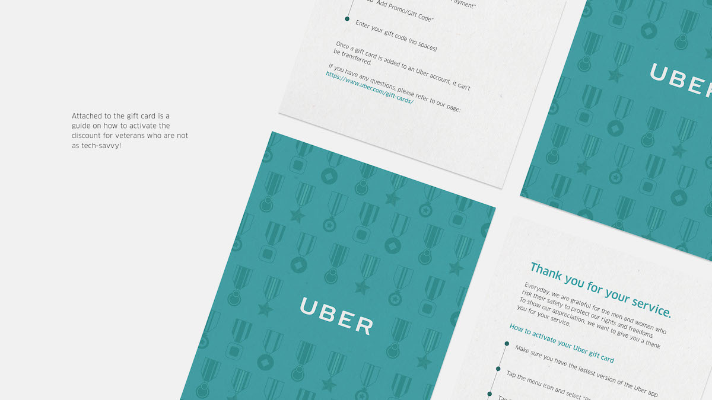
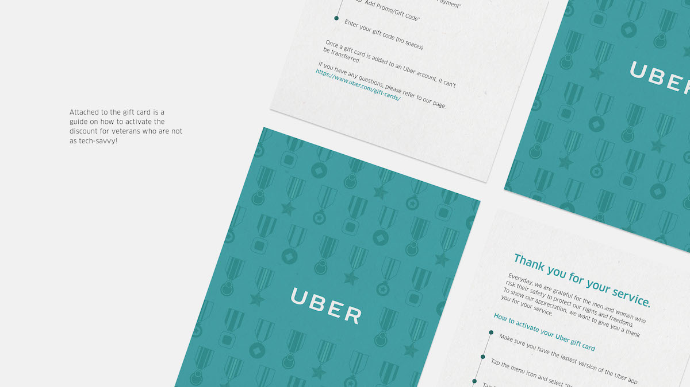

UBER
In the summer of 2017, I had the opportunity to intern as a Communication Designer in the Creative Marketing team at Uber. I work to develop new concepts for future marketing campaigns, as well as improve and expand upon existing campaign designs. These are selected work done during my three months at Uber.
UBER VETERANS
Everyday, millions of men and women risk their safety to protect our freedom and rights. As a result, many of our heroic veterans suffer from combat wounds that have made their lives harder. These challenges can include tasks such as driving, or having access to well equipped cars for wheelchairs. Uber has always been a strong supporter of our troops and military. We want say thank you by giving those who have served the country an alternative means of transportation.
Deliverables


 



CALGARY AIRPORT
Brief: Create visual assets for the YYC, the international airport of Calgary, Canada during its busiest month of the year (July-September). Deliverables include variations of vinyls, posters, and billboards.
Idea: Calgary, the Wild West of Canada, is known for its sunny weather and vast grasslands. One of Canada’s biggest events, the Calgary Stampede, attracts over a million attendees each year. To celebrate the event and the city itself, I created visual assets based on Calgary’s unique qualities.
Deliverables


Behind the Scene

WORLD'S EMOJI DAY
Brief: Create social media posts for World's Emoji Day that are intrinsically Uber
Idea: Emojis are a universal language. Similarly, Uber has solidified itself as both a staple in people's daily lives the world over and a ubiquitous product. As a natural addition to life, we'll create images with emojis integrated into photography to tell the story of your day.
Copywriter: Jordan Elle


Twitter Caption Copy
Initial Tweet: Monday got you like 😶? Turn that ☹️ upside ⬇️ because it's #worldemojiday, and we know how to decode your everyday woes. #worldemojiday
⏰💤⏰💤⏰
😴😲😴😲😴
🏃‍🖥🏃‍️🖥🏃‍
😞😩😞😩😞
👉📲🚗 #worldemojiday
Getting Up Late: Slept through your alarm? Again? Not a good look. But no need to worry about being late to work—your ride is right on time. #worldemojiday
🏢😋🏢😋🏢
ğŸ”ğŸ’🌯ğŸ’ğŸŒ
💡🍕💡🍕💡
⏳😱⏳😱⏳
👉📲🚗 #worldemojiday
Hungry At Work: Lunch at last. The world is your oyster. Or burger. Or burrito? Pizza! But you’ve taken too long to decide. @UberEATS it is. #worldemojiday
📈😐📈😐📈
🏋️‍➡️🏋️‍➡️🏋️‍
🚙🏍🚙🏍🚙
🅿️🚫🅿️🚫🅿️
👉📲🚗 #worldemojiday
Getting to Gym Woes: Work is over. Workout time is here. You’re trying to pack on the muscle, but the gym parking lot is always packed. No sweat. #worldemojiday
🕺🍺🕺🍺🕺
🏃‍🖥🏃‍️🖥🏃‍
❓🏡❓🏡❓
👉📲🚗 #worldemojiday
Night Out: End the day with a night out. You live it up and break it down until last call. Time to go home. How? Leave that to us. #worldemojiday
Trip or Treat
Trip or Treat is a nationwide campaigns proposed for Halloween 2017. Check out the case study on this link.

Miscellaneous Work
This section contains a compilation of speculative work that has not (yet) seen the light of day. Many of these posters are part of the open brief campaign proposals.
Reflection
"You're interning at Uber? So, like, do you drive?"
The Impression
Unlike the typical internship impressions you get on TV, interns at Uber are expected to be doing the same level of work as full-time designers. Not only were we given the creative freedom to explore different directions, but our inputs were actually considered and recognized. As interns, we still get to pitch our ideas to the next person in the office, such as our creative director or design manager.
One of the most exciting things being an intern at Uber is getting a peek into what the future of transportation could look like. We got to work with designers and engineers talking about autonomous cars and flying vehicles. On top of the wide range of products, Uber is constantly coming out with new ideas and products that make owning a personal car seem more impractical than practical (UberEats, UberFreight, etc.).
The Culture
The most eventful time for me during the internship must have been my first two weeks at Uber. Two days into my internship, I was assigned to develop the design for a 48-feet billboard at YYC Airport in Canada. Five days into my internship, I sat two rows down from where David Bonderman made the infamous remark to Arianna Huffington that eventually made him step from the board. And at the end of the second week, Travis Kalanick decided to step down as the CEO of Uber. To my surprise, despite what the media has to say about Uber at this point, my immediate team was very supportive.
After all of these big changes had happened so quickly, I began noticing a shift in how Uber presented itself as a company. Campaigns and paid media content started to change from rider acquisition focus to a more human centric/storytelling approach. Examples for this could be the 180 Days of Change campaign as well as the Ride to Remember video for Father’s Day.
The Work
One thing that I like about Uber is its flexibility in design. Since Uber is a relatively new "start up" compared to other established tech companies, flexibility regarding the brand’s image is still possible. This allowed me to explore a lot of different approaches in visual directions without being restricted to a strict guideline. I was constantly challenged to think outside the box and envision how the project could live outside of its brief, whether it would be an installation or a social activation.
A little thing I noticed could be improved at Uber is the time and project management. I have always thought big companies like Uber would have prepared for a campaign months before. But since the team was relatively small and new projects kept rolling in from other departments, it was hard for designers juggle between current projects and future campaigns. I was surprised to be invited into a “Fourth of July Brainstorm Session†meeting 10 days before Fourth of July. Though this "lack" in planning, eventually, let me work on some incredible projects.
The Peer(k)s
One of the biggest perks being at Uber is your peer. I got to work with a team of talented designers and copywriters: we got Behance famous, emoji makers, world-class pun artists, you name it. Outside of my immediate team, I also got to interact with amazing people like our CBO Boz Saint John, who was tasked to bring more diversity and inclusion into Uber (she also convinced Beyonce to performed at Super Bowl half time show in 2013) (and she's friend with P. Diddy) (among other celebrities).
On top of that, many people on my team come from a diverse background of designing in tech and agency. Designers and copywriters within my department have been with tech giants as well as well known design firms for numerous years before joining Uber. Thus, it was very eye-opening and exciting to hear what each person has to say about these different work environments, as well as their pros and cons.
In Conclusion
Even though Uber has been my first internship experience, I left on a very positive note. I got to learn how the creative pipeline at a multi-billion dollar tech startup works, and see my design live and breath in the real world.
Also, free Uber credits every month (that I maxed out the first two weeks on UberEats).
Thank you Dave Colson and Meg Gallagher for being the coolest intern managers and the Creative Marketing team for an Uberific summer! 🚗